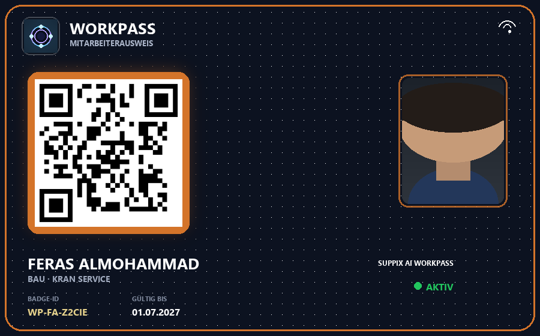
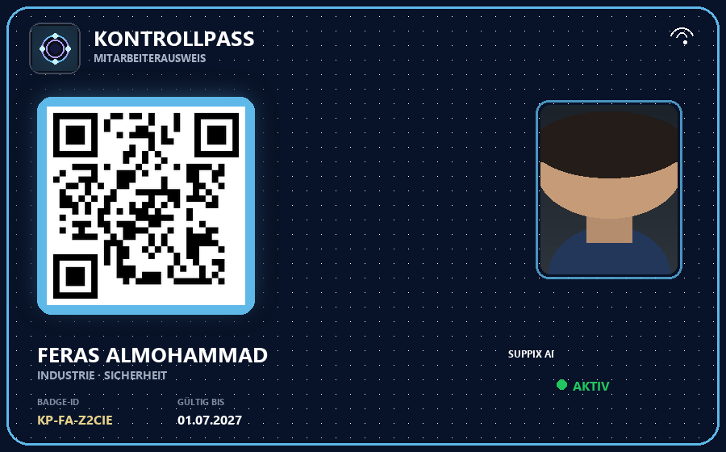

الهوية
عامل، زائر، مقاول فرعي – بطاقة رقمية بصورة وQR ومعرّف وصلاحية. اختياري: Apple/Google Wallet.
WorkPass يدير دورة العمل كاملة في موقع العمل: هوية · دخول · امتثال · تقارير – ويبقى قريباً من الفريق: خطة عمل، شات، مكالمات، اجتماعات فيديو، أمان وتنبيهات استباقية. مع براندينجك الخاص – اسم شركتك واللوجو بدل اسم المنصة الافتراضي فقط.



بناء، صناعة، لوجستيات، أمن وقطاع عام – منصة واحدة للهوية، الدخول، الامتثال، الحضور والتشغيل.
عامل، زائر، مقاول فرعي – بطاقة رقمية بصورة وQR ومعرّف وصلاحية. اختياري: Apple/Google Wallet.
تسجيل دخول/خروج عبر بوابة دوّارة، QR، NFC أو GPS – بدون قوائم ورقية، مع سجل تدقيق كامل.
البواب يرى فوراً الصورة والاسم والشركة والوقت. إشارة لحالات الدخول المفتوحة.
وثائق قاربت على الانتهاء مع تنبيهات، صندوق وارد، طلبات GDPR – مخاطر أقل قبل أن تكبر.
PDF بالبريد، DATEV CSV، إغلاق يومي – جاهز للمحاسبة والإدارة.
خطة عمل، شات، مكالمات، فيديو، فحوصات أمان وتنبيهات استباقية – النظام يبقى قريباً من التشغيل.
«من الورق والبطاقة البلاستيكية — إلى هوية رقمية، دخول ذكي، امتثال تلقائي وتقرير جاهز للإدارة.»
ما يطارده العملاء يدوياً اليوم – وما يجعله WorkPass مرئياً تلقائياً.
فصل واضح – السوبر أدمن يحتفظ بسيطرة المنصة، والشركات تبقى معزولة.
المنصة، الخطط، المستأجرون والأمان العام – سيطرة كاملة على النظام.
شركته فقط: الفريق، الخطط، الوثائق، التقارير والبراندينج.
وضع دخول سريع: صورة، اسم، شركة، وقت – مباشر وقابل للتتبع.
تطبيق ببطاقة رقمية، خطة يومية، أمان وتواصل مباشر.
لا مشروع لأشهر – من العرض إلى أول دخول مباشر بخطوات واضحة.
نُظهر الهوية → الدخول → الصورة الحية → الخطة → الشات → التنبيه – حسب سيناريوك.
مستأجر، براندينج، مواقع وأدوار – علامتك بدل WorkPass فقط.
إصدار البطاقات، مسح QR، تفعيل تطبيق الموظف – فعلي ورقمي معاً.
أول تسجيل دخول، عرض البواب، إرسال الخطة والتنبيهات – تشغيل بلا مطاردة Excel.
بدل أدوات منفصلة للبطاقات والحضور والوثائق والفواتير: كل شيء في WorkPass – متعدد الشركات وقابل للتدقيق.
صورة، معرّف بطاقة، QR، PIN، صلاحية – بطاقة فعلية وتطبيق. اختياري Wallet. توقيع عند التسليم كإثبات.
بوابة دوّارة، QR، NFC أو GPS. عرض مباشر للبواب مع صورة وتنبيه – بدون سجل ورقي.
وثائق منتهية، صندوق وارد، طلبات خصوصية – تنبيهات قبل تفاقم المخاطر.
PDF بالبريد، CSV لـ DATEV، إغلاق يومي – جاهز للمحاسبة والإدارة.
كل شركة مستأجر معزول. ربط مقاولين فرعيين. أدوار: سوبر أدمن، مدير شركة، بوابة، عامل.
اسم المنصة الافتراضي WorkPass. مع براندينجك يظهر اسم الشركة واللوجو في تطبيق الموظفين وعلى البطاقات وفي النظام كله.
خطة شهرية وإرسال للموظفين (بريد + Push). في التطبيق: خطة يومية مع تسجيل دخول وخروج وفحص أمان.
تواصل داخلي في تطبيق الموظف: شات مع ملفات وموقع، رسائل صوتية، مكالمات واجتماعات فيديو.
تنبيه تأخر، تحذيرات انتهاء وثائق، إرسال الخطة وبريد إلكتروني – النظام يبلّغ قبل أن تسأل.
مواقع وموظفون كثر، خطوط قرب بالمتر – نادر في السوق وواضح فوراً.
كاميرات/RTSP، قواعد أتمتة، Copilot ونداء طوارئ/Roll-Call – قرارات بلا مطاردة يدوية.
مواقع · موظفون · قرب بالمتر
على الخريطة الحية تضيف أي عدد من المواقع وترى الموظفين مباشرة. بين الموظفين تظهر خطوط ربط مع المسافة – مثلاً: «س يبعد 10 أمتار عن ص». فيرى العميل القرب والفرق والوضع فوراً – بلا Excel وبلا مطاردة هاتفية.
يُعرض هنا كعرض توضيحي للميزة – وعندما يكون الموظفون مباشرين يظهرون على الخريطة بمسافات حقيقية.

WorkPass يبقيك على اطلاع: من سيأتي، من تأخر، ما المخطط، وكيف تتواصل مع الفريق بأمان وسرعة.
فحوصات أمان في الخطة اليومية، إرشادات في الموقع، حضور مباشر ونداء طوارئ – حتى لا تضيع المسؤولية في الفوضى.
خطة نشر شهرية بموقع وأوقات، تُرسل للجميع بالبريد وPush. التطبيق يعرض خطة يومية واضحة.
شات بين الشركة والموظفين – ملفات، موقع، صوت وإشعارات قراءة. حيث تعيش البطاقة: في التطبيق.
مكالمات صوتية واجتماعات فيديو من التطبيق – بلا أداة إضافية عند الحاجة لتنسيق سريع.
تنبيه تأخر · من متوقع ومن في الموقع · وثائق قاربت على الانتهاء · إرسال خطة العمل · تقارير PDF بالبريد · Push في التطبيق. التشغيل يشعر بالاهتمام – لا مجرد «تسجيل رقمي».
العملاء يبيعون ويشغّلون المنصة تحت علامتهم – دون أن يرى المستخدم النهائي اسماً غريباً.
اسم المنصة الافتراضي هو WorkPass. عند وضع براندينج شركتك يستبدل الاسم الافتراضي أينما يرى الموظفون والشركاء البرنامج.
WorkPass Lohn هو نظام المحاسبة والرواتب لشركاتكم في ألمانيا: يستقبل بيانات الساعات والعقود من المنصة، يحسب وفق BMF PAP وSV gesetzlich، يُصدر كشوفًا جاهزة، ويعيدها إلى المنصة حتى يراها الموظف — دون بيانات تجريبية ودون إضاعة وقت على النقل اليدوي.
دورة واحدة من الساعات حتى الكشف المعتمد.
استلام تلقائي لبيانات الشهر، حساب، ثم إرجاع الكشوف للموظفين عبر المنصة.
BMF PAP للضريبة، SV وفق SGB IV (بما في ذلك Mini-/Midijob وفصل AN/AG).
جاهزية الشهر، مساعد للفجوات، ثم حساب وتحرير عند اكتمال الدورة (من يوم 28/29 للشهر الجاري).
DATEV، LODAS، SEPA، وGoBD بعد تأكيدكم.
مسار منظم نحو LStB وربط اختياري بـ ELSTER.
محطة عمل للفواتير وفق § 14 UStG، مع نفس منطق الجسر والتحرير.
كل شركة معزولة بـ company.id؛ لا اختلاط بيانات.
لا موظفين وهميين في بوابة الشركة؛ النظام يسحب ما هو موجود ويكمل الناقص عبر المنصة.
محاسبة هادئة، سريعة، وقابلة للتدقيق: تحسبون ما يلزمكم قانونيًا، وتُصدّرون ما يحتاجه المستشار — والمنصة توصل النتيجة للموظف.
أسعار شفافة – جميع الموظفين مشمولون. تتوسع مع نمو فريقك.
+ 2,50 € لكل موظف من الـ 11
+ 3,00 € لكل موظف
| الميزة | زائر | Starter | Professional | Enterprise |
|---|---|---|---|---|
| بطاقات فعلية | ✓ | ✓ | ✓ | ✓ |
| تطبيق وبطاقة رقمية | – | ✓ | ✓ | ✓ |
| خطة عمل | – | – | ✓ | ✓ |
| شات · اتصال · فيديو | – | – | ✓ | ✓ |
| تنبيهات تأخر وبريد | – | – | ✓ | ✓ |
| وثائق وتقارير متقدمة | – | – | ✓ | ✓ |
| White-Label · API · AI · كاميرات | – | – | – | ✓ |
| السعر من الموظف 11 | – | – | 2,50 € | 3,00 € |
إصدار بطاقات، تفعيل التطبيق، بدء التحكم بالدخول – إنتاجي خلال أيام لا أشهر.
من في الموقع؟ متأخر؟ وثائق تنتهي؟ شات أو اتصال أو اجتماع – النظام يبقيك قريباً من الفريق.
اسم شركتك واللوجو واسم البطاقة – التصميم والخطط تناسب قطاعك.
نعم. تنبيهات تأخر، حضور مباشر («من في الموقع»)، إرسال خطة العمل بالبريد وPush، وتحذيرات لانتهاء الوثائق – دون أن تطارد أولاً.
نعم. خطة شهرية ويومية، شات داخلي (ملفات، موقع، صوت)، مكالمات واجتماعات فيديو – مع فحوصات أمان يومية. كل ذلك في تطبيق الموظف وبوابة الشركة.
نعم. اسم المنصة الافتراضي WorkPass. مع براندينجك يظهر اسم الشركة واللوجو في تطبيق الموظفين وعلى البطاقات وفي النظام كله – بما في ذلك الألوان وأسماء البطاقات (White-Label).
لا. من بلا هاتف يحصل على بطاقة فعلية. والباقون يستخدمون التطبيق ببطاقة رقمية.
نعم. تُعالَج البيانات الشخصية لتتبع الوقت والتحكم بالدخول والتواصل الموثّق فقط، مع أدوار وسجلات تدقيق.
البطاقات الفعلية تعمل على الطرفيات عند ضعف الشبكة – وتُزامَن الإدخالات عند عودة الاتصال.
اكتشف WorkPass في عرض مباشر مجاني – أو افتح المنصة الآن.
أسئلة عن WorkPass؟ نسعد بنصحك وترتيب عرض تجريبي.
مطوّر WorkPass – هوية مؤسسية، دخول وقوى عاملة لكل قطاع.